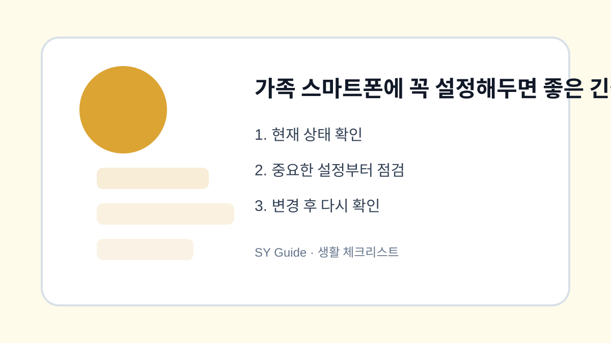

가족 스마트폰에 꼭 설정해두면 좋은 긴급 정보
긴급 연락처, 의료 정보, 잠금화면 메시지, 위치 공유를 가족 상황에 맞게 설정하는 방법입니다.

스마트폰은 평소 연락 도구지만, 응급 상황에서는 중요한 정보 창구가 됩니다. 가족 스마트폰에 긴급 연락처와 의료 정보를 미리 설정해두면 잠금 상태에서도 필요한 연락을 돕는 경우가 있습니다. 다만 개인정보가 노출될 수 있으니 꼭 필요한 정보만 넣어야 합니다.
긴급 연락처 등록
부모님이나 자녀 스마트폰에는 가족 대표 연락처를 긴급 연락처로 등록해두는 것이 좋습니다. 기종에 따라 잠금화면에서 긴급 정보가 보이는 방식이 다르므로 실제로 표시되는지 확인합니다.
의료 정보와 위치 공유
알레르기, 주요 질환, 복용 약처럼 응급 상황에 필요한 정보만 간단히 적습니다. 위치 공유는 편리하지만 사생활과 연결되므로 가족과 충분히 이야기하고 필요한 사람에게만 허용합니다.
| 항목 | 추천 내용 | 주의점 |
|---|---|---|
| 긴급 연락처 | 가족 1~2명 | 번호 변경 시 수정 |
| 의료 정보 | 알레르기, 질환 | 과도한 정보 제외 |
| 잠금화면 메시지 | 분실 연락처 | 개인정보 최소화 |
| 위치 공유 | 필요 가족만 | 동의 후 설정 |
상황별로 놓치기 쉬운 마지막 점검
- 긴급 연락처가 잠금화면에서 보이는지 확인하기
- 의료 정보는 꼭 필요한 내용만 입력하기
- 분실 대비 연락처를 간단히 표시하기
- 위치 공유는 동의 후 필요한 범위로 설정하기
- 번호가 바뀌면 즉시 수정하기
긴급 정보 설정은 한 번 해두면 마음이 놓이는 기본 준비입니다. 가족 기기를 정리하는 날 함께 확인해두면 좋습니다.
가족 스마트폰에 꼭 설정해두면 좋에서 우선순위를 정하는 법
가족 스마트폰에 꼭 설정해두면 좋은 모든 항목을 한 번에 처리하기보다 연락, 인증, 결제, 백업처럼 문제가 생겼을 때 불편이 큰 항목부터 확인하는 편이 좋습니다.
가족 스마트폰에 꼭 설정해두면 좋 점검 후 다시 볼 항목
설정을 바꾼 직후에는 문제가 없어 보여도 다음 날 알림, 동기화, 자동 결제, 위치 공유 상태가 달라질 수 있습니다. 하루 정도 실제 사용 상태를 지켜보세요.
가족 스마트폰에 꼭 설정해두면 좋 관련 공식 확인처
확인 기준: 2026.06.27 · 작성/검토: SY Guide 편집팀 · 정정 문의: issuebara@gmail.com